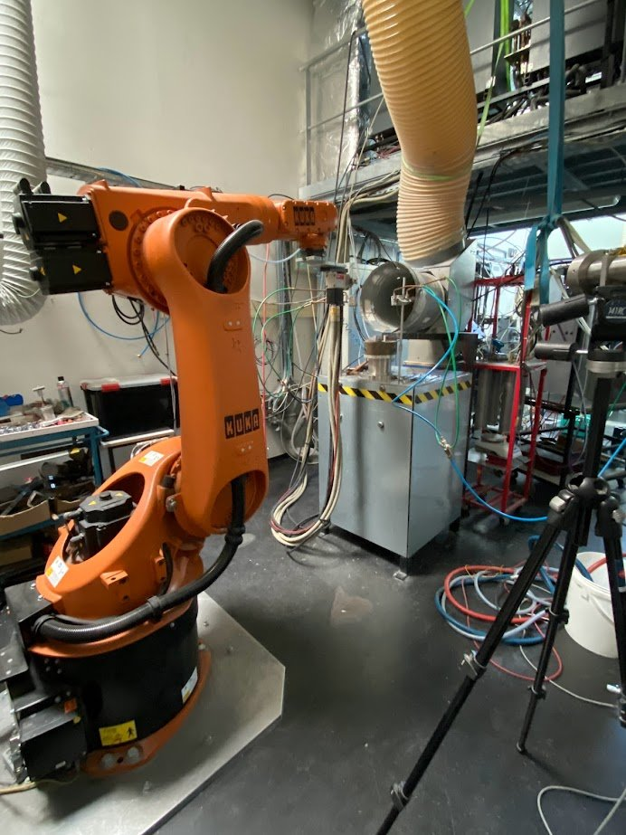

Atmospheric plasma sprayingProyección por plasma atmosférico
A plasma jet melts the bismuth-containing glass particles and projects them onto titanium alloy, where they flatten and build the coating.Un chorro de plasma funde las partículas de vidrio con bismuto y las proyecta sobre la aleación de titanio, donde se aplastan y forman el recubrimiento.
The techniqueLa técnica
Plasma spraying is the standard industrial route for coating hip and dental implants. RADIOBIOCOATS used it to deposit both the silicate and the borate bismuth-containing glasses.La proyección por plasma es la vía industrial habitual para recubrir implantes de cadera y dentales. RADIOBIOCOATS la usó para depositar los vidrios de silicato y de borato con bismuto.
The thermal spray team of IRCER at the University of Limoges carried out the plasma spray experiments together with the project.El equipo de proyección térmica del IRCER de la Universidad de Limoges realizó los ensayos de proyección por plasma junto con el proyecto.
A systematic study of plasma power, spray distance and gas mixture identified the conditions that give compact coatings while keeping the glass structure.Un estudio sistemático de la potencia del plasma, la distancia de proyección y la mezcla de gases identificó las condiciones que dan recubrimientos compactos conservando la estructura del vidrio.



Impactful resultsResultados destacados


All radiographsTodas las radiografíasIn vitro testsEnsayos in vitroOther techniquesOtras técnicas